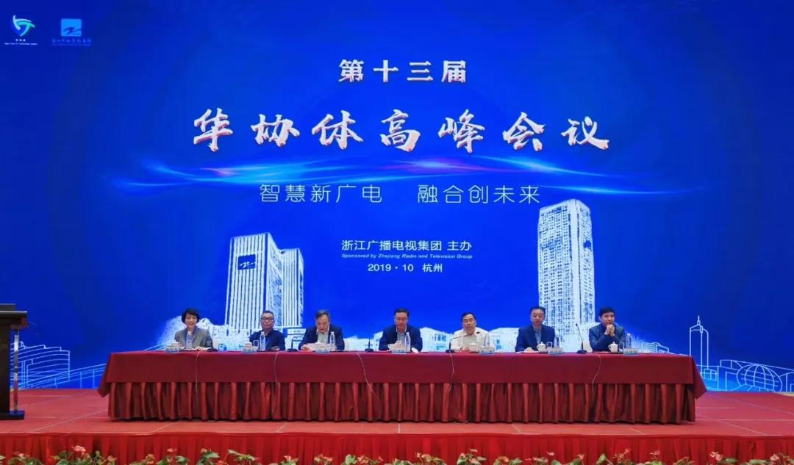
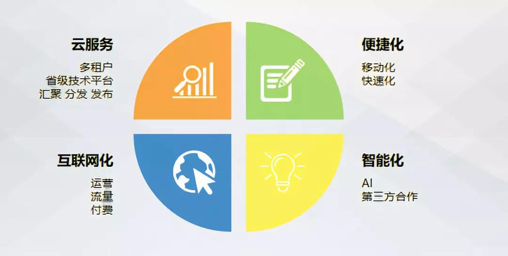

华协体高峰会 | ONAIR阳光云视“新技术赋能新宣传”
2019年10月22日，由浙江广播电视集团、华东电视技术协作体主办的“第十三届华协体高峰会议”在浙江杭州举行。

华协体高峰会议是各电视媒体、设备厂商交流技术、展示最新的技术发展成果、沟通技术应用经验、加强产品与技术以及需求和解决方案的重要平台。
会议以“智慧新广电·融合创未来”为主题，进一步加强各电视台、各厂商单位在5G、媒体融合、物联网和智能化的技术交流，对行业热门话题和关注焦点进行了深入探讨。
北京阳光云视科技有限公司作为广电媒体行业专业的融媒体平台技术服务提供商受邀参会，媒体发展与创新事业部售前总监王振刚发表了主题为“新技术赋能新宣传”的演讲。
传统媒体时代，提供给广电媒体类B端用户的产品，以制作、演播室、播出等为主，与C端的互动性不大。
而在融媒体时代，阳光云视基于先进的产品理念，打造了ONAIR媒体云产品，如APP、媒体号生产工具等，实现了帮助传统媒体通过技术平台服务于C端用户的市场需求，与C端的互动性越来越强，在进行产品设计时，既会考虑B端用户使用的便利性，更会考虑与C端的互动性，这也决定了媒体云产品特点及发展方向，主要定位于如下几点：
1、云服务：通过松耦合、高开放度、多租户的方式，为广电媒体行业提供解决方案。产品多租户的天然属性，在省级技术平台搭建时，可以快速按需为县级融媒体中心提供服务支撑。
2、便捷化：产品工具移动化、快速化，可以通过Mobile端完成工作，逐步释放生产产能，适应移动时代。
3、智能化：公司在自主开发智能服务的同时，也可快速对接各大云服务商提供的AI智能工具，这是通过公有云方式提供服务的一个优势，而且一次对接，所有的租户都可以享受到同样的服务。
4、互联网化：媒体融合最终的目标之一，是助力主流媒体更好、更强的传播社会主义价值观，阳光云视也会以此为目标提供更多的运营思路，让产品设计更互联网化，来适应媒体宣传工作变革的需求。

符合融媒发展趋势的ONAIR媒体云产品新功能：
1、Migo
移动采编APP，为PGC用户打造，产品具有移动化、便捷化的特点；PC端可以完成的工作，90%也可以通过Migo移动端完成。
2、AR眼镜直播
第一步，释放双手；第二步，AR直播赋能。
AR眼镜计划实现所见即所得，将内容时时传回，作为现有媒体采编设备的补充，可以提升信息展示的维度，助力生产和信息传播。
3、媒体号移动版
为PUGC用户提供。整合区域内地方政企、事业单位、区域流量主播等自媒体的头部资源，对接更多互联网发布平台，逐步实现产品的工具化，成为一款通用的KOL工具。
4、分发矩阵
对接国内外互联网发布平台和省级技术平台第三方APP发布端，目前已对接十余家头部媒体平台，实现一键分发，赋能官方媒体在互联网时代的引导力和影响力。
5、AI让音像立体化
具备自主研发AI能力，对接AI能力工具，包括智能拆条、人物识别、语音识别、智能标签等功能。
6、智能云媒资
采用先进的云计算、大数据、人工智能等技术，实现媒资上云、价值挖掘、分级存储、版权保护等功能，为用户提供一整套的智能云媒体管理平台。
随着5G时代的到来和更多业务形态的出现，阳光云视将在未来继续探索，推进技术应用，为媒体融合赋能。